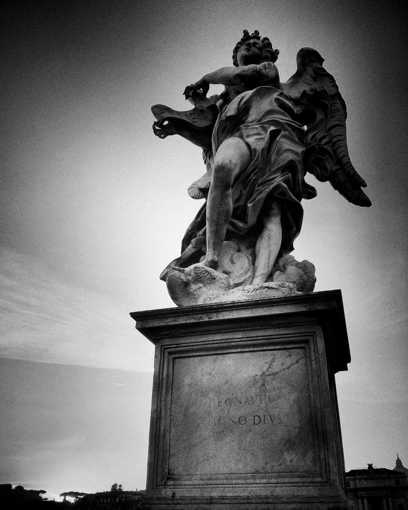
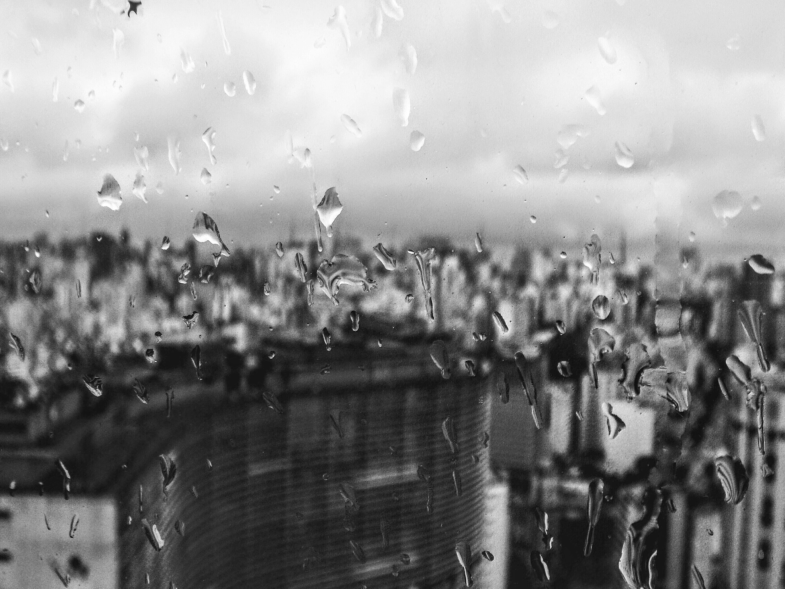
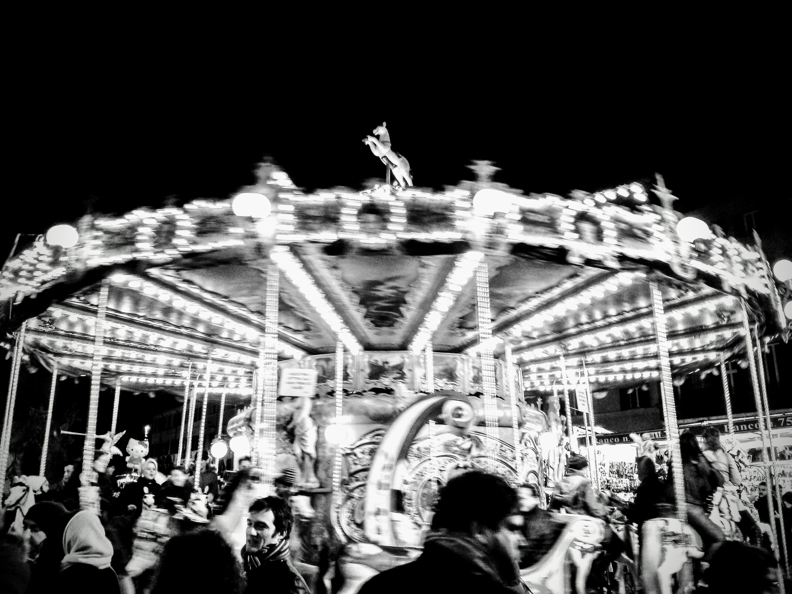

A Tapestry of Dimensions

Transported to a realm, vibrant and new,
Where colors dance and emotions ensue.
Words fail to capture this symphony of feeling:
A tapestry of experiences revealed.
A world within a world, a hidden dimension,
Where hearts intertwine, defying comprehension.
My soul takes flight, soaring through the air,
As space and time dissolve, beyond compare.
We float in a realm where boundaries cease,
Bound by a chemistry that brings release.
A relationship blossoms, a connection so rare,
A bond that transcends, with love to spare.
In other dimensions, our roles may shift and turn,
Mother, lover, sibling, lessons to learn.
Yet, in this reality, a reflection we find
Of lives intertwined, hearts and minds aligned.
Life’s choices weave a path, a unique design,
Moments of laughter, sorrows that entwine.
But in this dimension, I choose to embrace
The joy of connection, the love and the grace.
With you so dear, a bond so true,
We explore this dimension, me and you.
In the realm of love, where hearts take flight,
We find solace and joy, bathed in radiant light.
20:47

The clock reads 20:47,
My restless mind seeks no reply.
Thoughts race back, a tangled thread,
To joys abandoned, words unsaid.
Discouraged by the fading light,
The past intrudes, a painful sight.
Trying to mend what's torn apart,
A shattered dream, a wounded heart.
The present offers no reprieve,
The future's promise, I can't believe.
Lost in the labyrinth of my mind,
I search for peace I cannot find.
Gathering fragments, scattered and lost,
I journey on, whatever the cost.
Tonight, I surrender to the flow,
Release the past, and let it go.
Like drifting in a dream's embrace,
Through walls of time, I find my place.
The glowing numbers mark the time,
As reality and dreams intertwine.
I wake from dreams to harsh recall,
Life's not a dream, we rise and fall.
Sometimes it's best to just let be,
To end the struggle, and break free.
And start anew, with open eyes,
Embrace the dawn, beneath clear skies.
For in each ending, a new beginning lies,
A chance to start again, to slowly rise.
A Child in a Grown-Up Body

Verse 1
I’m a child trapped in this grown-up body,
If you could see life the way I do:
No wars, no money, no obligations,
Just making plans to spend with you.
No regrets and no disappointments,
Only pure love and sweet redemptions.
Chorus
Oh, if you could see,
How simple life could be.
Open your heart,
Let yourself feel deeply.
Oh, if you could see,
There’s still a child in me,
Sharing my life and love
With the people around me.
Verse 2
And if we allowed ourselves
To meet with friendship and with truth,
Perhaps this world would find its purpose
In the kindness of our youth.
How easy it could be to love
Without being afraid of feeling too much.
Chorus
Oh, if you could see,
How simple life could be.
Open your heart,
Let yourself feel deeply.
Oh, if you could see,
There’s still a child in me,
Sharing my life and love
With the people around me.
Bridge
And if we have to grow up somehow,
Then let our spirits grow.
Let our souls and hopes grow deeper,
There’s so much we don’t yet know.
Oh, if you could feel
How I welcome our differences,
There would be no more fences,
No walls and no distances.
Final Chorus
Oh, if you could see,
The whole world a Ferris wheel.
Open your heart,
Don’t be afraid to feel.
The universe and stars made me
This child in a grown-up body,
Sharing my life and love
With the people around me.
Outro
And the world is still
A good place indeed.
There’s still a child in you,
There’s still a child in me.